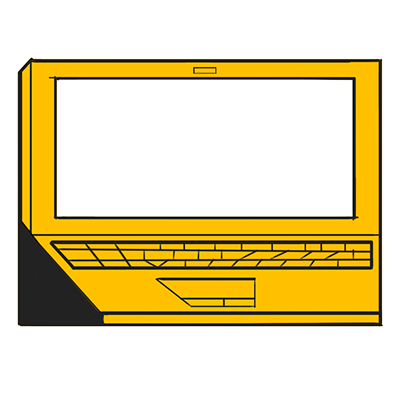

Technically, it's Ricardo, but its whutever. I'm a student at UC Berkeley studying Computer Science and
Film Studies. I have a deep passion for computer graphics, movies, and art.

<<<<<<< HEAD
- Sweet Victory
- Walden
- Only Love
- The Loop
>>>>>>> 9cfb84d22f88e4241d07e6f8f4b40fa15dd6311b
- Walden
- Only Love
- The Loop

Rasterizer - C++ implemented image rasterizer – performs supersampling, hierarchical transforms, and texture mapping with antialiasing on SVG files and converts to 2D image.
MeshEdit - C++ implemented 3D model mesh application; load and edit basic COLLADA mesh files (used by many major modeling packages and real time graphics engines).
PathTracer - C++ implemented, based on Physically Based Rendering (Pharr & Humphries)
Here are some notes I have done for UC Berkeley's CS184 Computer Graphics and Imaging course. (I am currently typing up some of the notes. these are really crude and do not have proper citation at the moment).
(pdf version)
- Rasterization
- Transforms & Projection
- Texture Mapping
- Visibility, Shading, Overall Pipeline
- Introduction to Geometry and Splines
- Bezier Curves and Surfaces
- Mesh Representation & Geometry
- Geometry Processing
(pdf version)
- Introduction to ray tracing
- Radiometry and Photometry
- Monte Carlo Integration
- Global Illumination
- Material Modeling
(pdf version)
3.1 – Introduction to Ray Tracing
Ray tracing is a technique for rendering images by following the path of a ray of light and simulating the effects of its interaction with objects in a 3D scene. The resulting rendered image is realistic, since it follows a physically based model in which light interacts with objects in the physical world. Consider a ray of light as a stream of photons. This ray propagates through space until it hits a surface, which interrupts the stream. The surface either absorbs, reflects, or refracts the ray. For our purposes, light travels in straight lines. Light rays do not interfere with each other if they do happen to cross. Light rays travel from light sources to the eye.An early attempt at ray tracing was done by Arthur Appel in 1968 with ray casting. The main idea behind ray casting is that for each pixel, trace a ray from the eye (camera) through that pixel, and find the first object that intersects with that ray. The material properties of the intersected surface determine the effect of the light in the scene, and then determine the shading of this object.
Recursive ray tracing is also possible. A ray of light can affect more than one surface; it can bounce off or even go through other surfaces in a scene. The value of this solution is more apparent for surfaces such as metal or glass. A ray is defined by its origin position o, t time (with range [0, ), and a unit direction vector d. It follows that this is the ray equation (in parametric form):
Thus, r is a function of a time t giving the point along a ray. In order for this ray to interact with a scene, this ray needs to hit faces of object. Each face can be represented by a plane, which in a 3D space is defined by a normal vector and a point on that plane. Consider the equation for a plane:
where p’ is any point on the plane and N is the normal vector. Now we can set up the intersection.
Accelerating Ray-Surface Intersection
Now that intersections are possible, there is a way to optimize the process. It would be naïve to run the algorithm #pixels x #objects times. One way to avoid this is to use bounding volumes which basically binds a complex object with a simple box volume. The object will be fully contained within this box volume, and it follows that if the ray does not hit this box volume, it will not hit our complex object. There are 6 potential sides that a ray could hit our box volume.
3.2 - Radiometry and Photometry – The Physics of Light
3.2.0 – Overview
In order to achieve physically based rendering, we need to adopt a framework based in physical properties of light. Radiometry provides a measurement system and units for illumination. It allows for the measure of the spatial properties of light. It follows that this will allow us to perform light calculations in a physically correct manner. What is light? In the real world sense, light is created by a physical process that converts energy into photons. Each photon carries a small amount of energy. Over some time, light consumes some amount of energy, Joules. Some is turned into heat, some into photons. Exposure, is the enrgy of photons hitting an object (film, sensors, sunburn, solar panels, etc.). In computer graphics, we basically assume a “steady state” of flow, that is the rate of energy consumption is constant, so flux (powere) and energy are often interchangeable.3.2.1 – Foundations
Before being able to solve the rendering equation, a few foundational units and concepts shall be reviewed. A reader familiar with the material can skip this section. An angle of a circle is the ratio of the subtended arc length to radius : A solid angle of a sphere is the ratio of the subtended area to radius squared :
A solid angle is a 2-dimensional angle in 3-dimesional space that a object subtends at a point. It is a measure of how large an object appears to an observer at that point. The unit we are most interested in solving the rendering equation are differential solid angles.
The direction vector is . To be isotropic is to have the have the physical property that has the same value when measured in different directions. So an Isotropic Point source is a point that emits light in all directions equally.
3.2.1 – Irradiance and Radiance
Irradiance (illuminance) is the power per unit area incident on a surface point.
Radiance is the fundamental field quantity that describes the distribution of light in an environment. Radiance is the quantity associated with a ray. Rendering is all about computing radiance. Radiance is invariant along a ray in a vacuum.
3.2.1 – Irradiance and Radiance
3.3 - Monte Carlo Integration
Although the cursor will never fall off the left end, it will often wander off the right end of the string. In this case we think that the cursor scans a U, which of course may be overwritten immediately. This is how the string becomes longer-a necessary feature, if we wish our machines to perform general computation. The string never becomes shorter.
Since 8 is a completely specified function, and the cursor never falls off the left end, there is only one reason why the machine cannot continue: One of the three halting states h, "yes", and "no" has been reached. If this happens, we say that the machine has halted. Furthermore, if state "yes" has been reached, we say the machine accepts its input; if "no" has been reached, then it rejects its input. If a machine halts on input x, we can define the output of the machine M on x, denoted M(x). If M accepts or rejects x, then M(x) = "yes" or "no", respectively. Otherwise, if h was reached, then the output is the string of M at the time of halting. Since the computation has gone on for finitely many steps, the string consists of at>, followed by a finite stringy, whose last symbol is not aU, possibly followed by a string-of Us (y could be empty). We consider stringy to be the output of the computation, and write M(x) = y. Naturally, it is possible that M will never halt on input x. If this is the case we write M(x) =/.
3.4 - Global Illumination
It is amazing how little we need to have everything! Viewed as a programming language, the Turing machine has a single data structure, and rather primitive one at that: A string of symbols. The available operations allow the program to move a cursor left and right on the string, to write on the current position, and to branch depending on the value of the current symbol. All in all, it is an extremely weak and primitive language. And yet, we shall argue in this chap- ter, it is capable of expressing any algorithm, of simulating any programming language.
From this initial configuration the machine takes a step according to 8, changing its state, printing a symbol, and moving the cursor; then it takes another step, and another. Note that, by our requirement on 8(p, t>), the string will always start with at>, and thus the cursor will never "fall off" the left end of the string.
3.5 - Material Modeling
It is amazing how little we need to have everything! Viewed as a programming language, the Turing machine has a single data structure, and rather primitive one at that: A string of symbols. The available operations allow the program to move a cursor left and right on the string, to write on the current position, and to branch depending on the value of the current symbol. All in all, it is an extremely weak and primitive language. And yet, we shall argue in this chap- ter, it is capable of expressing any algorithm, of simulating any programming language.
3.3 - Monte Carlo Integration
Although the cursor will never fall off the left end, it will often wander off the right end of the string. In this case we think that the cursor scans a U, which of course may be overwritten immediately. This is how the string becomes longer-a necessary feature, if we wish our machines to perform general computation. The string never becomes shorter. Since 8 is a completely specified function, and the cursor never falls off the left end, there is only one reason why the machine cannot continue: One of the three halting states h, "yes", and "no" has been reached. If this happens, we say that the machine has halted. Furthermore, if state "yes" has been reached, we say the machine accepts its input; if "no" has been reached, then it rejects its input. If a machine halts on input x, we can define the output of the machine M on x, denoted M(x). If M accepts or rejects x, then M(x) = "yes" or "no", respectively. Otherwise, if h was reached, then the output is the string of M at the time of halting. Since the computation has gone on for finitely many steps, the string consists of at>, followed by a finite stringy, whose last symbol is not aU, possibly followed by a string-of Us (y could be empty). We consider stringy to be the output of the computation, and write M(x) = y. Naturally, it is possible that M will never halt on input x. If this is the case we write M(x) =/.
3.4 - Global Illumination
It is amazing how little we need to have everything! Viewed as a programming language, the Turing machine has a single data structure, and rather primitive one at that: A string of symbols. The available operations allow the program to move a cursor left and right on the string, to write on the current position, and to branch depending on the value of the current symbol. All in all, it is an extremely weak and primitive language. And yet, we shall argue in this chap- ter, it is capable of expressing any algorithm, of simulating any programming language.
From this initial configuration the machine takes a step according to 8, changing its state, printing a symbol, and moving the cursor; then it takes another step, and another. Note that, by our requirement on 8(p, t>), the string will always start with at>, and thus the cursor will never "fall off" the left end of the string.
3.5 - Material Modeling
It is amazing how little we need to have everything! Viewed as a programming language, the Turing machine has a single data structure, and rather primitive one at that: A string of symbols. The available operations allow the program to move a cursor left and right on the string, to write on the current position, and to branch depending on the value of the current symbol. All in all, it is an extremely weak and primitive language. And yet, we shall argue in this chap- ter, it is capable of expressing any algorithm, of simulating any programming language.
Sweet Victory (2016)
My first 3D animated short! My notable contribution to this masterpiece is Marshmallow (or as like my mom refers to it, "El Bombon"), which I modeled and animated. Learning Maya and other software was so rewarding, and this project helped me explore some of their capabilites. Fun fact: the chocolate fountain was for a time a bifrost simulation with very viscous chocolate. However, the renderfarm hates us and it didn't go as planned. This was made during my semester of UCBUGG, probably the best class I have taken while at Berkeley.
Walden (2016)
The piece was my group's submission for Cal State Long Beach's 24 Hours Challenge; as the name implies this was made in under 24 hours. The prompt was "make a 1 minute short that contains a physical or metaphorical wall". You learn a lot about your animation partners when trapped in a computer lab for 24 hours. We all left with a new connection with one another; and sleep deprivation.
The Only Love a Mans Ever Known (2017)
This project was made for UC Berkeley's Advanced Digital Animation course, CNM190 (Fall 2016 - Spring 2017). In essence, its a short about the pangs of alcoholism, but very layered, revealing new meanings with every view. I worked on the sound effects, lighting, modeling, and post-production for this short. Specifically, the lighting I am proud of is during the liquor store scene, as we experiemented with what felt like every possible variation. I am really proud of the music I wrote for this, especially when I found my peers humming the music at random times. It has won an award at the East LA film festival, and is being considered for other film festivals!
The Loop (2017)
This short was made for the Campus Movie Festival @ UC Berkeley. I worked on the music, some color grading, and story ideas. (I wrote the music in 30 minutes, while waiting to get medication).
STAY TUNED // MORE TO COME //